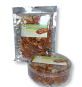

กุ้งเสียบยำสมุนไพร (จี้ออ)

"กุ้งเสียบ" เป็นผลิตภัณฑ์ที่เกิดจากการถนอมอาหาร โดยการ"รมควัน" เป็นภูมิปัญญาในการถนอมอาหารทำมาตั้งแต่สมัยโบราณ สามารถเก็บอาหารได้นานเพื่อใช้ในการประกอบอาหาร ต่อมาได้แปรรูปเป็นกุ้งเสียบยำสมุนไพร ซึ่งเป็นที่นิยมกันมาก ติดต่อ คุณอดิศร โทรศัพท์ 0-7562-2924-5,0-1979-565
ที่มา:http://www.tourkrabi.com/index.php?lay=show&ac=article&Id=319942